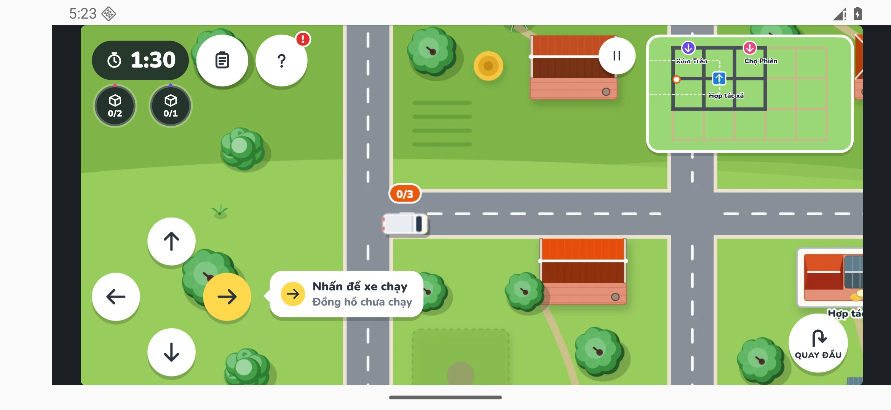
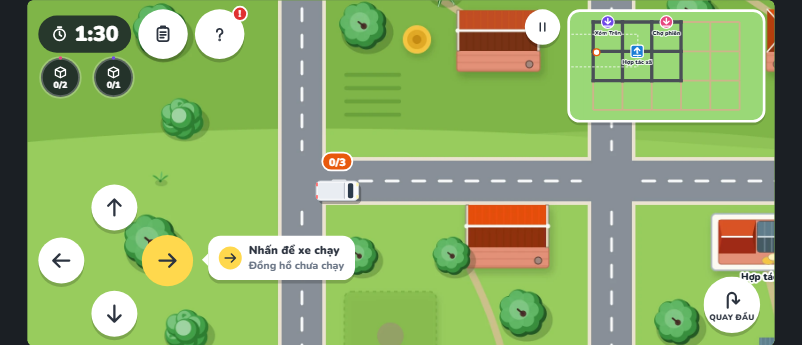
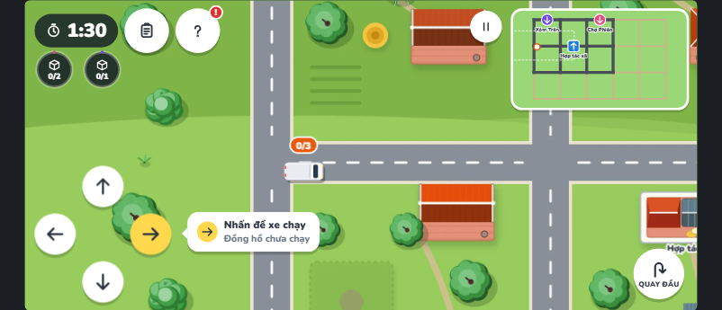
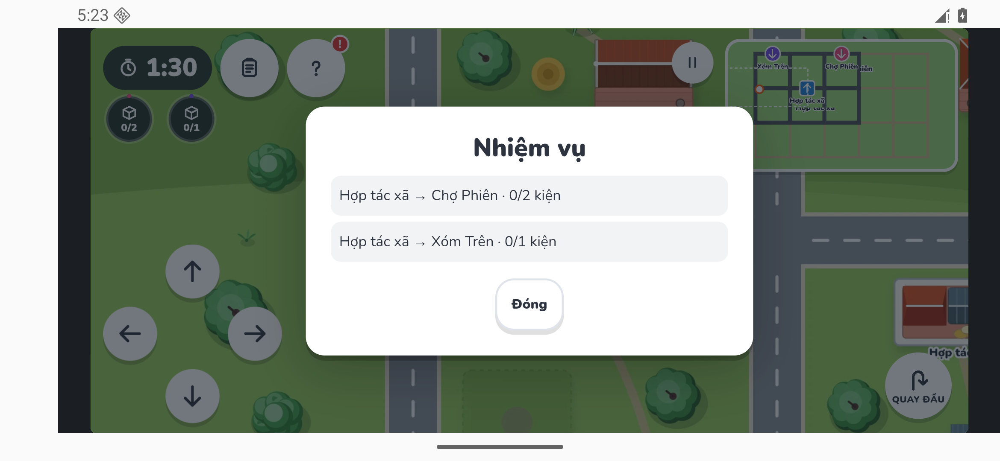
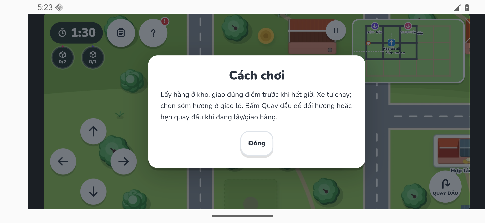
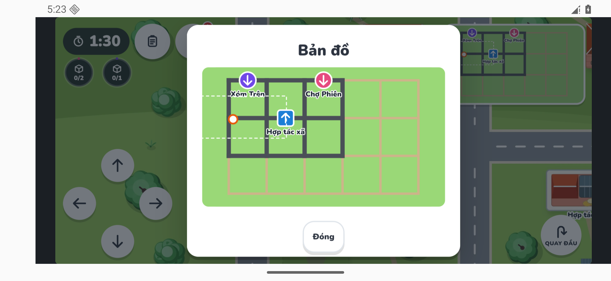
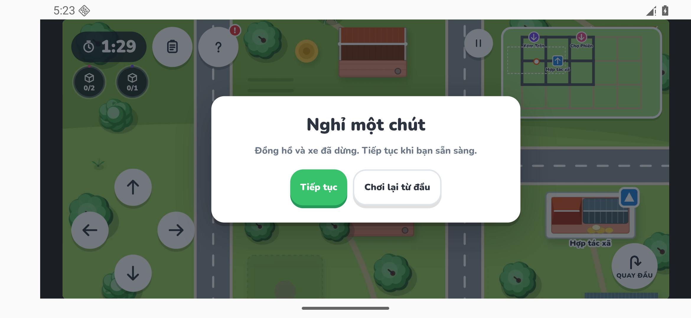
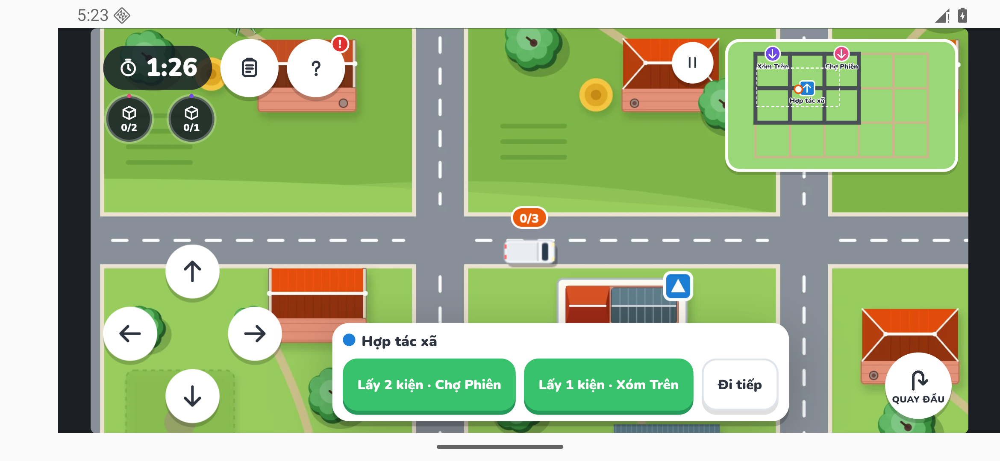
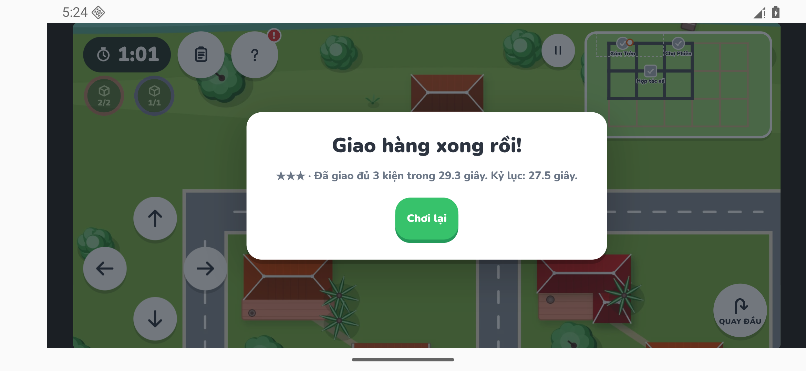
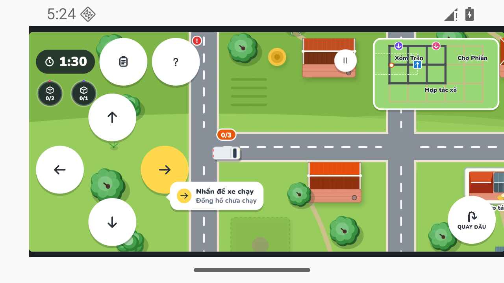

Chủ dự án đã duyệt mẫu cảnh/HUD C1L1 P1a. Trang này là bằng chứng Android để nghiệm thu P1b; chưa đánh dấu hoàn tất giao diện Chương 1–2. Chương 3–4 tiếp tục hoãn.
Báo cáo native: 8 kiểm tra pass · Nguồn, hash và cách chụp · Chơi bản web
AVD LittleRoutes_API36, Android 16/API 36, WebView 133, GPU phần mềm. APK
debug dev.littleroutes.slice, 0.1.0/code 1; SHA-256
87d9310f141bbb626f7d06d14f93d872a4225f32eac1a1a9bf00533e252bcd9d. Assets/font đóng gói local; kiểm khi tắt Wi-Fi/data, không Live Reload.

Hai ảnh web chụp Chromium 156/DPR 1 trong profile riêng. Demo ở fixture ready, tắt tutorial và đóng băng animation chỉ trong phiên chụp. Ảnh Android dưới đây đã cắt theo bounds WebView [136,66,2340,1014] rồi thu về 802×345 để so bố cục; ảnh gốc ở trên. Có khác raster/font/DPR, không khẳng định pixel-identical.









Chưa kiểm điện thoại thật/iOS, notch/camera thật, FPS/RAM/nhiệt hoặc chạy dài. Scene gốc đã được chia texture runtime để chạy trên GPU giới hạn 4096px; không sửa ảnh nguồn. Popup/prep/tutorial/cutscene và UI các màn khác còn cần chuyển.